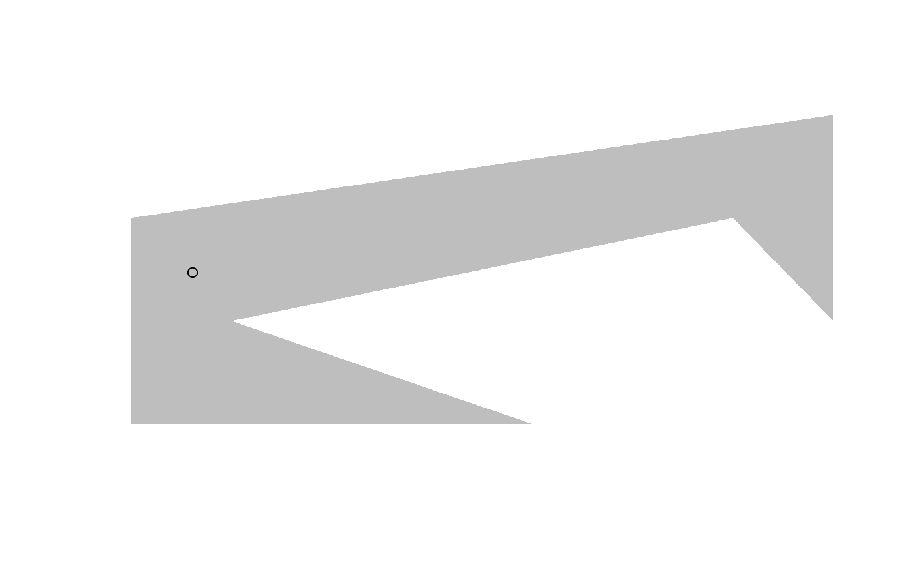

polylabelr is an R wrapper for the polylabel package from Mapbox. It currently contains a single function, poi() that finds the pole of inaccessibility of a polygon, which usually makes for a good place to put a label on a polygon—hence the name.
Usage
# a concave polygon
x <- c(0, 4, 1, 6, 7, 7, 0, 0)
y <- c(0, 0, 1, 2, 1, 3, 2, 0)
# locate the pole of inaccessibility
p <- polylabelr::poi(x, y, precision = 0.01)
plot.new()
plot.window(range(x, na.rm = TRUE), range(y, na.rm = TRUE))
polypath(x, y, col = "grey", border = FALSE)
points(p)
Modifications
The source code from polylabel and geometry.hpp has been modified in a few ways to compile properly with c++11 using the standard flags required by CRAN policies. polylabel has also been modified to return the distance from the chosen point to the enclosing polygon, in case it is of value to users.